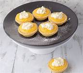

These lemon curd tarts are a staple dessert at my tea parties. I can make them quickly without even measuring the ingredients using a pastry bag to fill the small shells. The crust remains crunchy for several hours, so I make them early the morning of the tea and then refrigerate them. I also serve these at wedding and baby showers. For variation, you can place 1/4 teaspoon raspberry spread underneath the lemon curd and garnish with a fresh raspberry, omitting the cinnamon. Another variation is to use lime curd instead of lemon, both of which can be found in the baking aisle of the grocery store.
Per Serving: 43 calories; protein 0.5g; carbohydrates 6.3g; fat 1.8g; cholesterol 3.4mg; sodium 13mg.